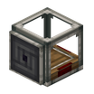

理包机：把碎包裹合并成一个。
参数
配方打包机转换
作用合并包裹
详细教程
怎么获得
无序合成：一个打包机直接转换成理包机，材料不变、功能升级，所以做错方向也能随时改回来，不用重做一整套。
它的外形和打包机几乎一样，装机时容易拿混；建议在机器上贴告示牌写清哪台是打包、哪台是理包。
怎么用
它把同一请求的多个碎包裹合并成一个再输出：上游打包机一件一件打出来的小包，经它合并后变成一整箱，收件方拆一次就够。
合并的是「同一请求」的包裹，不同地址、不同订单不会混在一起；所以订单号与地址要由打包机那边写对，理包机只负责合。
搭配
典型链路：打包机出小包 → 理包机合并 → 传送带送进车站或仓库；中间用溜槽垂直转运最省地方。
和工厂仪表搭配时，仪表按库存下单、打包机按单出货、理包机把一单的多件合成一包，整条链才算闭环。
获取方式
被谁使用
被 1 个物品的 1 条配方用作材料。
工作台 1 个
官方教程 · 从物流请求合并包裹
- 有时，请求的货物有必要以单一的包裹送达
- 请求来源 A
- 请求来源 B
- 否则，其他包裹可能混入其中
- 在这种情况下，将包裹重定向运输到一个存储方块中
- 在存储方块上放置一个理包机，并用红石信号激活
- 一旦所有分包裹送达，它们将会被打包成一个新包裹并输出
- 如此，请求的物品将被以可预测的顺序一同送达